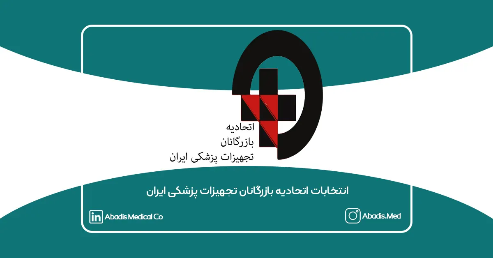

انتخابات سرنوشتساز اتحادیه بازرگانان تجهیزات پزشکی ایران برگزار شد
انتخابات اتحادیه بازرگانان تجهیزات پزشکی ایران، رویدادی کلیدی برای فعالان این صنعت، روز چهارشنبه ۱۷ بهمن ۱۴۰۳ با مشارکت گسترده اعضا برگزار شد. این انتخابات که در فضایی پرشور و رقابتی انجام گرفت، تعیینکننده اعضای جدید هیئتمدیره و بازرس اتحادیه برای دوره آینده بود. این رویداد نقش مهمی در آینده صنعت تجهیزات پزشکی، ملزومات پزشکی ایفا خواهد کرد.
دبیر اتحادیه، مصطفی وجداندار، در نشست «سلامت ایران» در روز دوشنبه ۱۵ بهمن ماه ۱۴۰۳ ضمن دعوت از رسانههای تخصصی برای پوشش خبری این رویداد، تأکید کرد که انتخابات امسال با مشارکت فعال اعضا و نامزدهایی از میان مدیران برجسته شرکتهای تجهیزات پزشکی برگزار خواهد شد. وی افزود: «تمام اعضای هیئتمدیره فعلی، به همراه تعدادی دیگر از اعضا، برای حضور در این انتخابات اعلام نامزدی کردهاند.» اتحادیه که هماکنون ۲۰۰ عضو فعال دارد، در سالهای اخیر رشد ۱۰ درصدی را تجربه کرده و فعالیتهای جمعی بیشتری را در مقایسه با دورههای گذشته به اجرا گذاشته است.
سه دستاورد کلیدی اتحادیه در سه سال اخیر
وجداندار در ادامه به سه اقدام برجسته اتحادیه در سالهای اخیر اشاره کرد:
- پیگیری حسابهای باز و حلوفصل برخی پروندهها از طریق شکایت قانونی
- برگزاری نمایشگاه بینالمللی ایران مِد به عنوان بستری برای توسعه صنعت
- حضور مؤثر در مجامع مختلف و نمایندگی اتاق تهران و اتاق ایران
فهرست نهایی نامزدهای انتخابات
فهرست نهایی نامزدهای تأیید صلاحیت شده برای انتخابات هیئتمدیره اتحادیه بازرگانان تجهیزات پزشکی ایران به شرح زیر اعلام شد:
۱- محمد اسلامیپور (شرکت مبنا طب پارس) ۲- شایان امینی (شرکت تهران آئورت) ۳- عباس براتی (شرکت ایران فارمیس) ۴- حسن بیداریفرد (شرکت راهیان طب صبا) ۵- حسین رضوانی (شرکت سارینا دنا تجارت) ۶- ابوالفتح صانعی (شرکت مدیریت تجهیزات پزشکی ایران سهامی خاص) ۷- محمود فروند (شرکت فرا طب اعصار) ۸- رامین فلاح (شرکت فنآوری آزمایشگاهی) ۹- سیدحسین لسان (شرکت تدارک درمان التیام) ۱۰- مجید محمدیان (شرکت مهرکام تجهیز) ۱۱- محمد ملکان (شرکت آتی پی) ۱۲- سعید میهنخواه (شرکت میزان بهداشت) ۱۳- مصطفی وجداندار (شرکت عرشیا گستر درمان) ۱۴- سیدافشین یادآور نیکروش (شرکت بانیان راه توسعه و رشد – برتر)
رقابتی سرنوشتساز؛ نتایج انتخابات اعلام شد
پس از برگزاری انتخابات، نتایج نهایی مشخص شد و اسامی منتخبین به شرح زیر اعلام گردید:
اعضای اصلی هیئتمدیره:
آقایان ابوالفتح صانعی، مصطفی وجداندار، عباس براتی، محمد اسلامیپور، سیدحسین لسان، سیدافشین یادآور نیکروش، رامین فلاح، شایان امینی، محمود فروند
اعضای علیالبدل هیئتمدیره: آقایان محمد ملکان، سعید میهنخواه
بازرس اصلی: آقای سهیل صادقیان
بازرس علیالبدل: خانم سمیه حقوقی
گامی تازه برای آیندهای روشن
انتخابات اتحادیه بازرگانان تجهیزات پزشکی ایران، نقطه عطفی در مسیر تقویت تعاملات صنفی و حمایت از حقوق اعضا محسوب میشود. امید است که ترکیب جدید هیئتمدیره، با برنامهای قوی و نگاهی رو به آینده، بتواند با همکاری و همفکری اعضای اتحادیه، مسیر توسعه این صنعت استراتژیک را با تمرکز بر نوآوری، حمایت از صنعت تحهیزات پزشکی و ارتقای استانداردهای ملزومات پزشکی هموارتر سازد.
فعالان این حوزه، اکنون چشمانتظار اقداماتی تحولی، نوآورانه و تأثیرگذار از سوی هیئتمدیره منتخب هستند.
🔹برای اطلاع از آخرین تحولات صنعت تجهیزات پزشکی، آبادیس را دنبال کنید و از رویدادهای مهم این حوزه آگاه شوید.